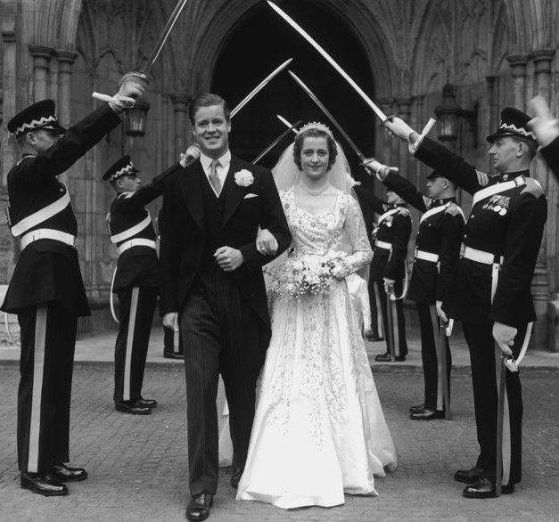
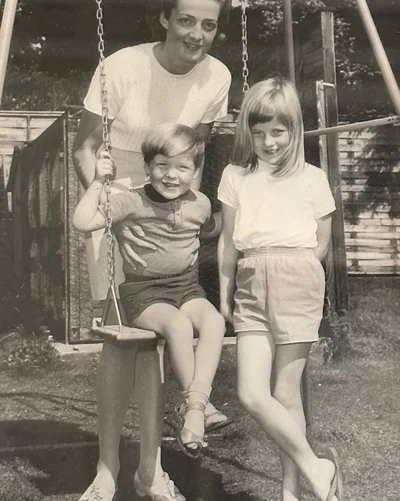
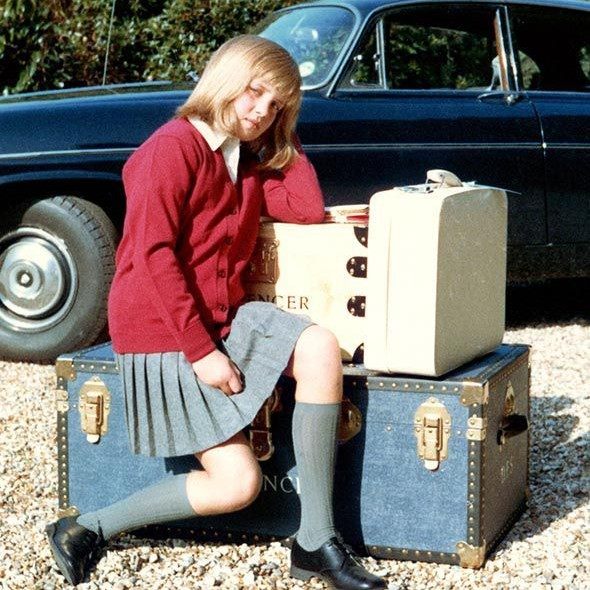
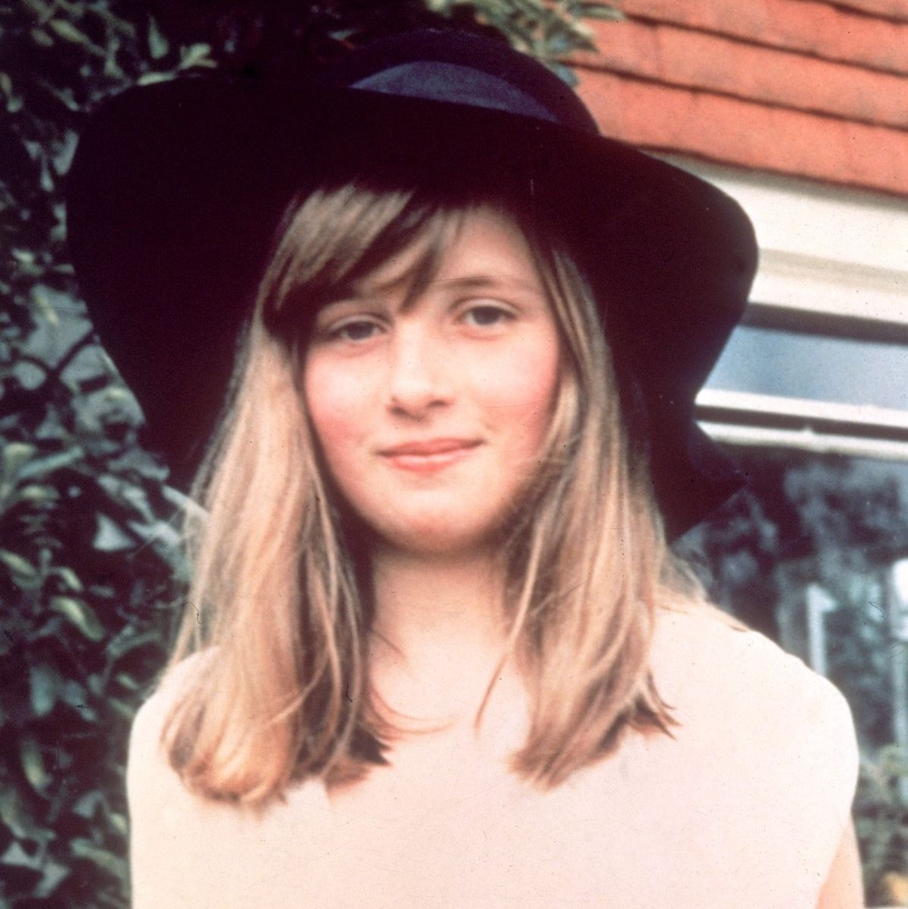
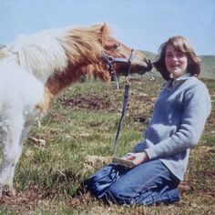

The 1954 wedding of John Spencer and Frances Roche was hailed as the event of the year, attended by Queen Elizabeth II and the British political elite. The Spencers were an aristocratic family—Winston Churchill, Britain’s most famous prime minister, was among their kin. However, the marriage of John and Frances was unhappy; they did not love one another, yet they were under pressure to produce an heir. They first had two daughters, followed by a son who died just hours after birth. This tragedy caused friction between the couple, though expectations for a boy remained; on July 1, 1961, their fourth child was born—a girl named Diana. This further strains the relationship between the parents; although Frances later becomes pregnant for the fifth time and gives birth to a son, the marriage does not survive, and the couple separates. Frances finds a lover and moves to Scotland with him, while the father takes custody of the children and works long hours, rarely appearing at home.



In 1973, Diana was sent to an elite girls' school, but she struggled academically. Her father had little time for his children and eventually remarried; seeking an escape from her troubles, Diana became interested in ballet and reading novels, eventually neglecting her studies entirely and failing her final exams twice, which resulted in her not receiving a secondary school diploma.

Her father then sent her to an institute in the Swiss Alps, but she struggled there as well; after failing her semester exams, Diana returned to Britain. Upon coming of age, Diana was gifted an apartment in central London by her mother, and she subsequently moved out of her father's home. She lived there with friends while looking for work—not out of a need to earn money, but to follow a tradition then popular among the daughters of British aristocrats.

The custom was that, before making a good marriage, a young woman would spend a few years working an ordinary job. Diana tried her hand at various roles: cleaner, nanny for acquaintances, and assistant to a kindergarten teacher. In general, however, her life seemed mapped out: a few years of work, marriage, children, and a lifetime dedicated to domestic life—and that is indeed how things might have turned out, had the Queen of Great Britain not taken notice of her.
Over time, Diana also began engaging in charity work; while everyone in the royal family participated in such activities, they usually did so in a very formal manner—sometimes even without personal involvement. Diana, however, was the first to show the British people genuine human compassion—and not just for the cameras; she would sometimes take her sons along on secret visits to the terminally ill to show them a different side of life.
| Organization | Logo | Who she helped and how | Princess Diana's contribution |
|---|---|---|---|
| Centrepoint | Providing shelter and support to young people left without housing. | She visited young people, drew attention to the issue of homelessness, and advocated for their rights. | |
| Great Ormond Street Hospital | For children requiring medical assistance and specialized treatment. | She was the president of the hospital and supported its charitable activities. | |
| The Leprosy Mission | To people living with leprosy—a disease surrounded by stigma and prejudice. | She visited hospitals and interacted with patients, demonstrating that they deserve respect and acceptance. | |
| National AIDS Trust | To people affected by HIV and AIDS issues, particularly through educational activities and the fight against discrimination. | How the organization's patron helped draw public attention to this issue. | |
| The Royal Marsden Hospital | For patients with oncological diseases requiring treatment and medical support. | She was the president of the hospital and supported its operations. | |
| English National Ballet | To the development of the art of ballet and cultural projects. | She was a patroness of the ballet troupe and supported the arts. | |
| The HALO Trust | To communities affected by conflict and contamination of their territories with explosive ordnance. | In 1997, she visited Angola and publicly drew the world's attention to the humanitarian consequences of landmines. |